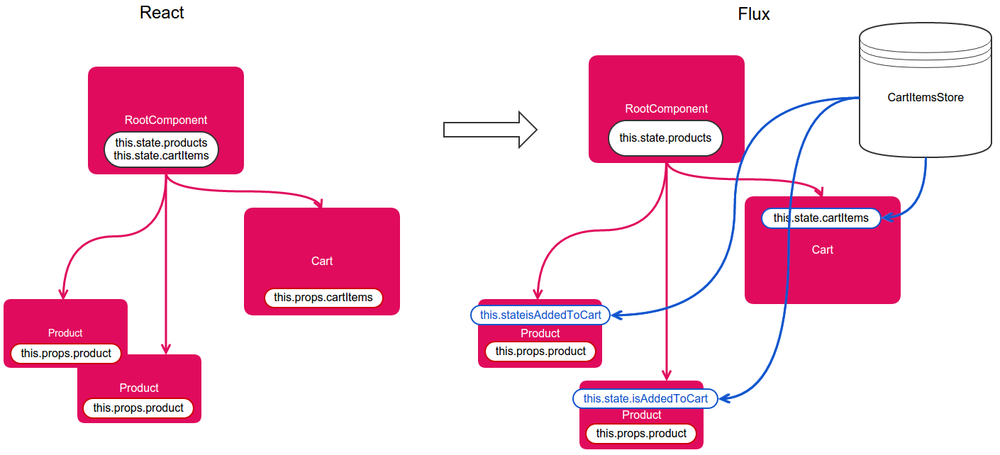
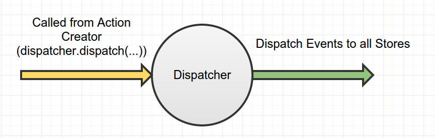

React.js and Flux architecture
class: center, middle .title[ Front-end training # React.js and Flux architecture ] --- # 1 percent but growing! <img width='500px' src='assets/img/it-react.png' /> <small>Screenshots from <a href="http://www.itjobswatch.co.uk/">http://www.itjobswatch.co.uk/</a></small> --- # React.js <img width='120px' src="assets/img/react-logo.png" /> React.js key ideas: - virtual DOM - component framework What makes React special: - simple to learn - fast rendering - composability - no direct DOM manipulation --- # Bootstrapping 1. Get latest version of react.js (100k minified, 31k minified and gzipped) 2. Render root React component into DOM: ```javascript React.render(<YourRootComponent />, document.getElementById('id1')); ``` It's possible to have multiple root nodes. --- # React building blocks - React DOM Elements - wrappers around DOM elements. ```javascript <input key={i} className="my-input" type="text" ref="myInput" /> ``` - React Components - widgets with custom attributes (props) and local state. ```javascript <MyInput key={i} className="my-input" product={{name: "Bacon"}} onRemove={handleRemove} /> ``` <br /> React application is a tree of React DOM Elements and React Components ```javascript <div> // React DOM Element <Products /> // React Component <Cart> // React Component <span>inside</span> // React DOM Element </Cart> </div> ``` --- # JSX - without JSX you have to create React Elements ```javascript var YourRootComponent = React.createClass({ render: function() { return React.createElement('div', null, "Hello world" + new Date()) }) ``` - with JSX React Elements are created for you ```javascript var YourRootComponent = React.createClass({ render: function() { return <div>Hello world {date={new Date()}}</div> }) ``` With JSX there's less code --- # Component api React component API is the most complicated part of React.js. ```javascript var YourComponent = React.createClass({ // Component-specific state getInitialState // initial components state getDefaultProps // default props values propTypes // Strict typed components! mixins // Add mixins, which are smart about Lifecycle methods // Lifecycle methods componentWillMount componentDidMount // Opportunity for component's DOM manipulation componentWillReceiveProps // Opportunity to set component's state componentWillUnmount // Opportunity to unregister event listeners ... render: function() { // Builds Virtual DOM return <div>Hello world {date={new Date()}</div> } }) ``` 'render' is the only required method, it's return value is used to build Virtual DOM --- # React.js data flow Data is stored as Components' State. ```javascript component.setState({selected: true}) ``` "Data down, Events up" ```javascript var ItemsList = React.createClass( getInitialState: function() { return {items: ["item1", "item2", "item3"]} }, _handleItemRemove: function(removedItem) { var filteredItems = this.state.items.filter( function(item) {return item !== removedItem} ) this.setState({items: filteredItems}); } render: function() { // <Item /> component can access this.props.onRemove, this.props.items return this.state.items.map(function(item, i) { <Item onRemove={this._handleItemRemove} item={item} /> }) }) } ``` --- # React change detection component.setState(...) -> newVirtualDOM/existingVirtualDOM comparison -> smart DOM rerender <img width='320px' style='float: right' src='assets/img/virtual-dom.png' /> Ways to improve performance: - call setState as low as possible - use shouldComponentUpdate to prevent re-rendering of large sub-tree - compare only State component receives with immutable values and PureRenderMixin. Optimize performance by preventing Virtual DOM rerendering: --- # Nice features. #1 - Ease of composability ```javascript ... render: function() { return ( <BaseModal closeBtn={true} onClose={this.props.onClose} isOpen={this.props.isOpen} > <form> <div className='input-pair'> <div className='input-pair__title-box'> NAME </div> <div className='input-pair__input-box'> <MacSelect name='country' options={[{value: 'Ukraine', label: 'Ukraine'}, ...]} value={this.state.storedParams.country} onChange={this._onInputChange} /> </div> </div> ... ``` --- # Nice features. #2 - No templating language React Component instances are manipulated using plain old JavaScript ```javascript ... render: function() { return ( <div className='assets-grid'> <div className='assets-grid__items'> {this.state.assets.map(function(asset, index) { return <AssetGridItem key={index} asset={asset} /> })} </div> </div> ); } ... var obj = { a: <div>hello</div>, b: <ListItem /> }; var listItem = predicate ? <ListItemA /> : <ListItemB /> ``` --- # Nice features. #3 - PropTypes PropTypes provide strict typing for component's parameters ```javascript var YourComponent = React.createClass( ... propTypes: function() { return { size: React.PropTypes.number, position: React.PropTypes.string.isRequired, contentType: React.PropTypes.oneOf(['News', 'Photos']), message: React.PropTypes.instanceOf(Message) } } ... ) ``` --- # Debugging tools <a href="https://chrome.google.com/webstore/detail/react-developer-tools/fmkadmapgofadopljbjfkapdkoienihi?hl=en">Chrome addon</a> --- # Roadmap to convincing boss to use React.js - Facebook, Instagram, Khan Academy, New York Times use it - Simpler code - Ability to incrementally add it to existing projects - Fast rendering speed - Code sharing between backend and frontend (isomorphic apps) --- # Live coding - React State is passed from top to bottom of React Component tree.  --- # Flux architecture  <small>https://twitter.com/abdullin/status/553292397506220034/photo/1</small> Key features: - Unidirectional data flow - Flux stores are domain models, not ORM models - Flux is more similar to CQRS than MVC --- # Components <img width='600px' src='assets/img/flux_component.png' /> Components can only call Action Creators and cannot modify Stores directly. Example: ```javascript actions.addProductToCart(this.props.product); ``` --- # Action creators <img width='600px' src='assets/img/flux_action_creator.png' /> Example: ```javascript loadMoreSearchResults: function(parameters) { dispatcher.dispatch(constants.LOAD_MORE_SEARCH_RESULTS_PROGRESS); searchDao.advancedSearch({parameters: parameters}).then(function(results) { dispatcher.dispatch(constants.LOAD_MORE_SEARCH_RESULTS_SUCCESS, results); })); }, ``` --- # Dispacher There's single Dispatcher instance per application  Dispatcher is not simple event-bus - it provides synchronization between Stores' callbacks. ```javascript CityStore.dispatchToken = flightDispatcher.register(function(payload) { if (payload.actionType === 'country-update') { flightDispatcher.waitFor([CountryStore.dispatchToken]); CityStore.city = getDefaultCityForCountry(CountryStore.country); } }); ``` --- # Stores <img width='600px' src='assets/img/flux_store.png' /> Store is a wrapper for Model with separate write and read interfaces. - write interface methods are invoked after matching Dispatcher Actions are triggered; - read interface corresponds to UI needs. Stores don't mutate each other directly. --- # Live coding - Flux - replace top-to-bottom Data flow with Flux architecture - add 'Remove from Cart' button to Product component --- # The end Learn more about React.js Flux architecture. It will help you become a better programmer.